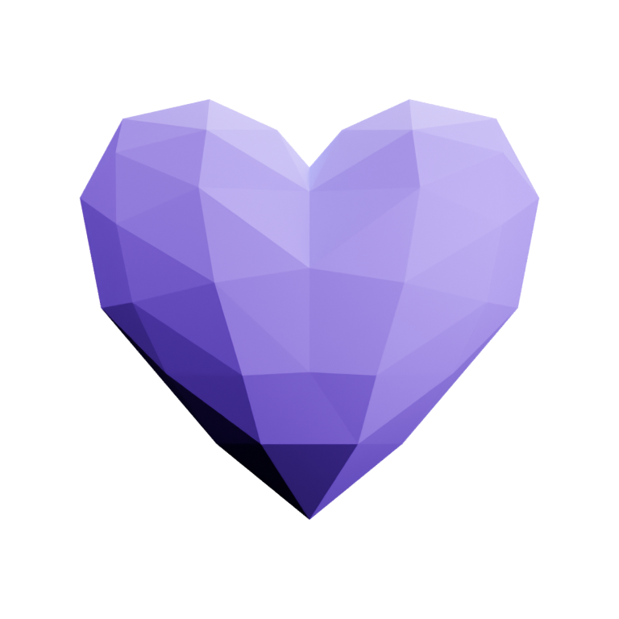

Qué bonito
coincidir contigo,
Reni.
Hay cosas que quería decirte.
Esta vez, quiero empezar por mostrártelas.
Hay sentimientos que toman forma
poquito a poquito.

Y seguiría
eligiendo encontrarte.
Cinco años de conocernos.
Un año y un mes desde que lo dijimos.
Qué bonito que seas tú, Reni.